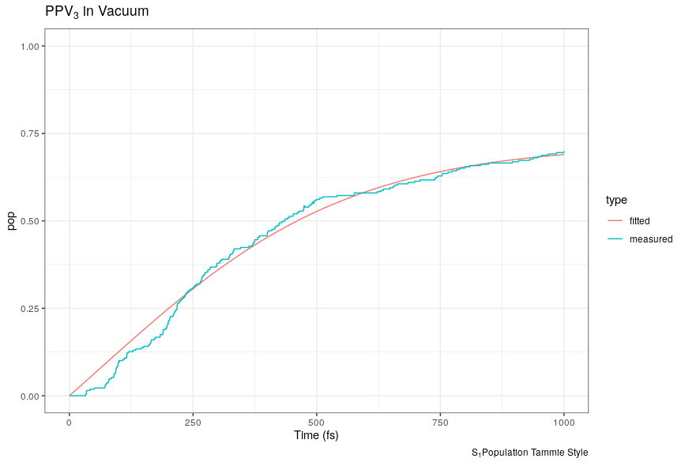
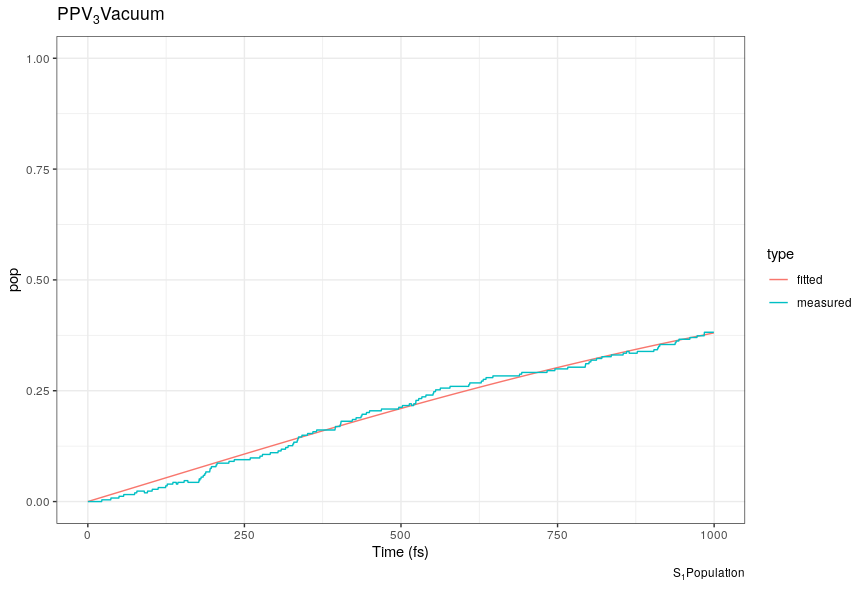
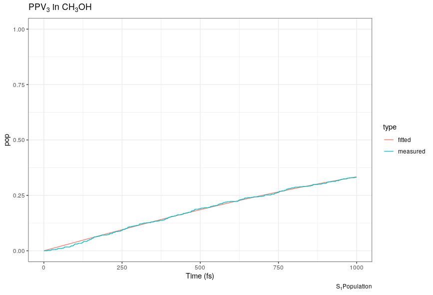
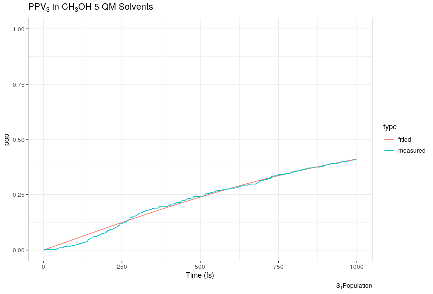
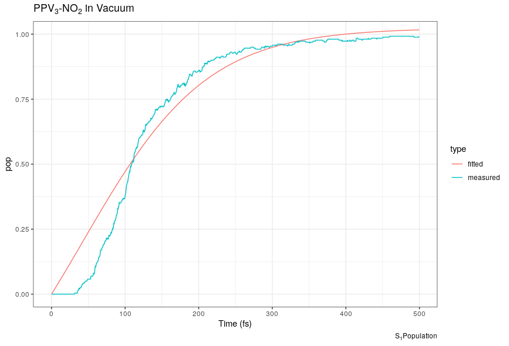
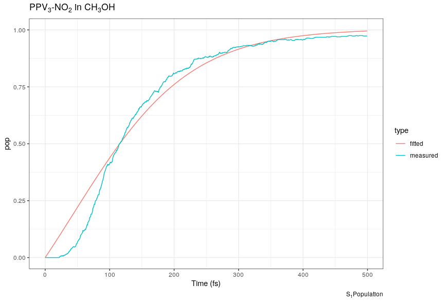
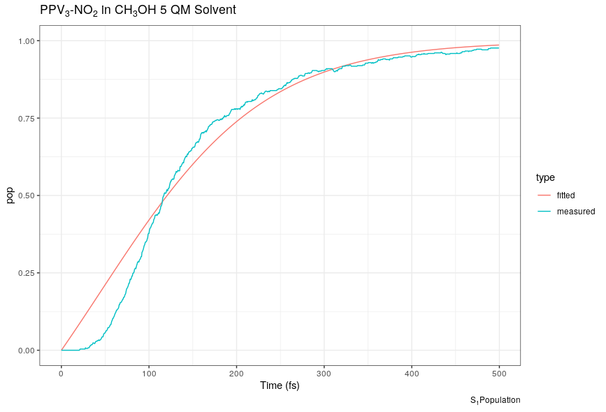

Population Fittings
Table of Contents
Fit Populations vs Time
Data Convention
allpops.txt: | t | Sm | S1 | S2 | …. | Sn |
Fit PPV3 S1-Population No Trivial Hops (Tammie Style)
For Tammies Fit \(\frac{Ae^{t/\tau}}{A+e^{t/\tau}} - \frac{A}{1+A}\)
| \(\tau\) | A |
| 253 | 1.28 |

Fit PPV3 S1-Populations Growth
The best fit was linear with Ax+b, but I don't expect that this would hold after a sufficient amount of time.
Vacuum
- For fit Ax + B
A B 0.000475592 -0.011878799 - For fit A/(1+exp(-(t-ti)/k))
k A ti 104.3133786 0.2442377 284.6610760 - For fit \(\frac{Ae^{t/\tau}}{A+e^{t/\tau}} - \frac{A}{1+A}\)
\(\tau\) A 671 1.1558 
- Using Tenua
Transition k \(\tau\) Sm->S8 0.0559787870 17.863910 S8->S7 0.0817304828 12.235337 S7->S8 0.0043447882 230.16082 S7->SL 0.0037677679 265.40913 SL->S2 0.0153428064 65.177124 S2->SL 0.0007614631 1313.2613 S2->S1 0.0019174279 521.53200 S1->S2 0.0011739160 851.84971
Ch3OH
- For fit \(Ax + B\)
A B 0.0003968665 -0.0077699055 - For fit A/(1+exp(-(t-ti)/k))
k A ti 94.6872926 0.1895741 257.4800193 - For fit \(\frac{Ae^{t/\tau}}{A+e^{t/\tau}} - \frac{A}{1+A}\)

\(\tau\) A 693.43 1.06 - Using Tenua
Transition k \(\tau\) Sm->S8 0.0524247921 19.074945 S8->S7 0.0848753339 11.781986 S7->S8 0.0044358106 225.43794 S7->SL 0.0032550289 307.21693 SL->S2 0.0142610273 70.121176 S2->SL 0.0006694887 1493.6772 S2->S1 0.0011392569 877.76515 S1->S2 0.0000420979 23754.154
Ch3OH-5s
- For fit Ax + B
A B 0.0005625508 -0.0231432645 - For fit A/(1+exp(-(t-ti)/k))
k A ti 72.6618384 0.2381899 251.6529838 - For fit \(\frac{Ae^{t/\tau}}{A+e^{t/\tau}} - \frac{A}{1+A}\)

\(\tau\) A 549.56 1.10 - Using Tenua
Transition k \(\tau\) Sm->S8 0.0531921463 18.799768 S8->S7 0.0911041525 10.976448 S7->S8 0.0054925934 182.06336 S7->SL 0.0041852124 238.93650 SL->S2 0.0165812768 60.308987 S2->SL 0.0008082376 1237.2599 S2->S1 0.0051486809 194.22451 S1->S2 0.0083264550 120.09913
Fit PPV3-NO2 S1-Population Growth
For all cases, the logistic equation
A/(1+exp(-(t-ti)/k))
best fit the data by a large margin
Vacuum
- For fit A/(1+exp(-(t-ti)/k))
k A ti 30.8981204 0.9624794 113.5144066 - For fit \(\frac{Ae^{t/\tau}}{A+e^{t/\tau}} - \frac{A}{1+A}\)

\(\tau\) A 84.671654 1.646086 - Tenua Fit
Transition k \(\tau\) Sm->S9 0.0285350764 35.044588 S9->SL 0.0245247832 40.775080 SL->S2 0.0206036417 48.535109 S2->S1 0.0344350054 29.040216 S1->S2 0.0008938455 1118.7616
Ch3OH
- For fit A/(1+exp(-(t-ti)/k))
k A ti 37.6187580 0.9425959 118.6864337 - For fit \(\frac{Ae^{t/\tau}}{A+e^{t/\tau}} - \frac{A}{1+A}\)

\(\tau\) A 90.407955 1.624839 - Tenua Fit
Transition k \(\tau\) Sm->S9 0.0289895778 34.495156 S9->SL 0.0264918518 37.747456 SL->S2 0.0206599239 48.402889 S2->S1 0.0233659078 42.797396 S1->S2 0.0010342606 966.87431
Ch3OH-5s
- For fit A/(1+exp(-(t-ti)/k))
k A ti 37.4634913 0.9283205 121.0073596 - For fit \(\frac{Ae^{t/\tau}}{A+e^{t/\tau}} - \frac{A}{1+A}\)

\(\tau\) A 93.802466 1.616496 - Tenua Fit
Transition k $τ Sm->S9 0.0278909741 35.853893 S9->SL 0.0263872547 37.897084 SL->S2 0.0201009872 49.748800 S2->S1 0.0196875488 50.793525 S1->S2 0.0010433400 958.46033